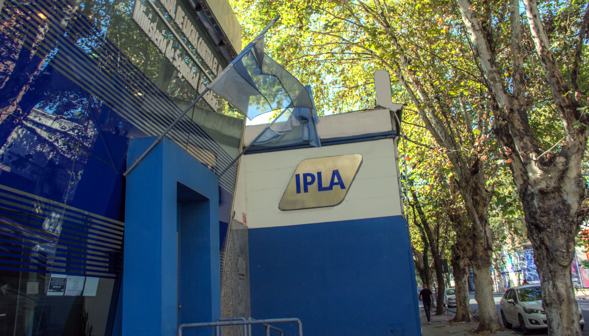

El Instituto Provincial de Lucha contra el Alcoholismo (IPLA) lleva más de 25 años en su función primordial de prevenir el alcoholismo y controlar la venta de bebidas alcohólicas en la provincia de Tucumán.Con el pasar de los años el Instituto fue creciendo y adquiriendo mayores responsabilidades en torno a la lucha contra el alcoholismo. El IPLA, ente autárquico vinculado con el Poder Ejecutivo Provincial a través del Ministerio de Seguridad, fue creado el día 29 de noviembre de 1994 al promulgarse la Ley 6600, en reemplazo de la denominada Junta contra el Alcoholismo. Su primer Director fue el Sr. Julio Potolicchio, mientras que en la actualidad, el Instituto se encuentra presidido por Dante Loza, en carácter de interventor desde el año 2023.
En el año 2002, la Ley 6600 es derogada por la Ley 7243, que establece la creación del Instituto y sus políticas de control del alcoholismo mediante el desarrollo de su función de fiscalización, siendo esta su principal tarea. En el año 2005 la Ley 7575 fue promulgada y estableció los mecanismos de control de la prohibición de fumar, atribuyéndole al IPLA la autoridad de su aplicación. Además en 2006, con la Ley 7750 se establecieron los horarios de cierre de locales bailables y también se le atribuyó a IPLA la autoridad de aplicación.
En principio, el IPLA funcionaba dentro de la estructura de SIPROSA, en la Secretaría de Adicciones. Recién en el año 2008 pasó a formar parte del Ministerio de Seguridad Ciudadana de la provincia. En cuanto a su ubicación, el IPLA funcionaba en un edificio ubicado en calle Bolívar al 900. Tiempo después, el instituto tuvo como sede el establecimiento ubicado en calle San Martín al 900. Durante los primeros años, el personal de IPLA no contaba con móviles para llevar a cabo su tarea de fiscalización. Tampoco existían las delegaciones de Alberdi ni Concepción, que surgieron a partir de la necesidad de los ciudadanos del interior de que se controle el consumo excesivo de bebidas alcohólicas y la realización de trámites en una sede cercana.
Además, el Instituto desarrolló a partir del año 2013 programas sociales que intensifican su rol preventivo. Uno de ellos fue “Activá tu control”, que se realizaba en articulación con PUNA (UNT) y consistía en concientizar sobre el consumo excesivo de alcohol a través de talleres en escuelas y actividades en boliches que incluyen juegos y sorteos. El segundo de los programas que desarrolló el IPLA, desde 2015, es “Un Pase a la Gloria” y consiste en la contención de niños y jóvenes en situación de vulnerabilidad social a través del rugby social. También se llevó adelante una campaña de reciclaje de tapitas plásticas a través del programa “RecIPLA”.
Así fue como el Instituto Provincial de Lucha contra el Alcoholismo fue adquiriendo más funciones y mayor crecimiento en su estructura debido a la eficacia en el ejercicio de la fiscalización de las leyes 7243, 7575 y 7750 en toda la provincia, y también el desarrollo de su rol preventivo en la lucha contra el alcoholismo.